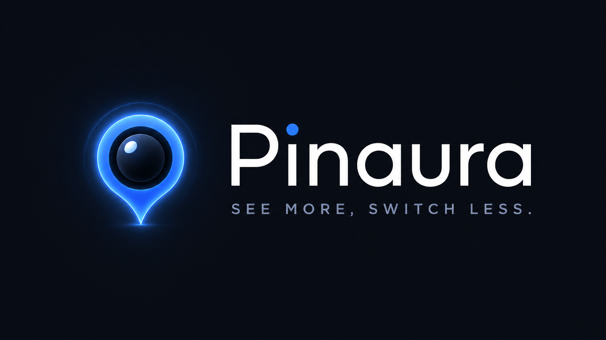
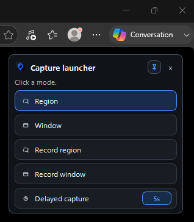
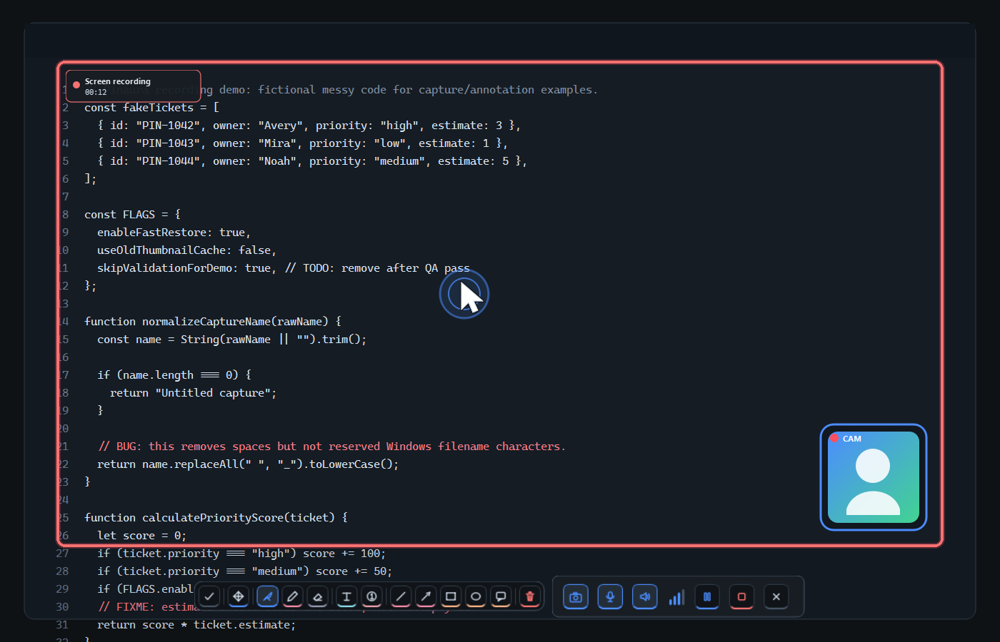
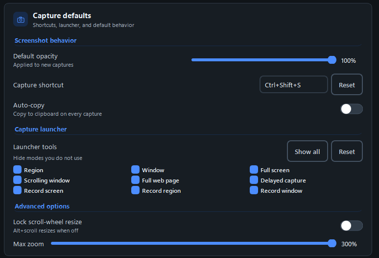
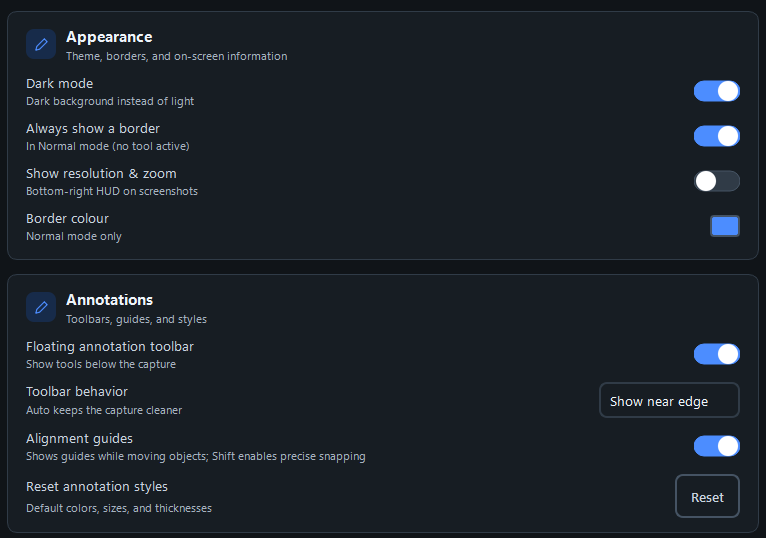

Pin while you work
Keep an important screenshot floating above your apps instead of switching windows over and over.
Pinaura helps you capture, annotate, and pin visual context to your screen for quick reference, so you do not have to keep switching windows. Recording makes it quick to explain work and help teammates.

Pinaura is built around pinned visual context: keep a capture visible while you write, compare, report, or explain. Then save it to a searchable library when the moment is done.
Keep an important screenshot floating above your apps instead of switching windows over and over.
Use arrows, callouts, boxes, highlights, pixelation, step numbers, and OCR selection to make the point clear.
Rename captures, add tags, index OCR text, and search the library when you need the visual evidence again.
The launch page highlights the core workflow: capture, pinning, video recording, annotation, OCR selection, and library search.

Open Pinaura from the tray or shortcut and start a region, window, full screen, delayed, scrolling, or web page capture.
Capture a region while showing the recording HUD, cursor focus, optional camera bubble, and the annotation tools below the work.

Lock the annotation toolbar when you want it to stay visible while you keep marking up the capture.
Tune shortcuts, capture behavior, toolbar preferences, language, appearance, and storage so Pinaura fits the way you work.


Use Pinaura for support tickets, QA notes, client feedback, implementation guides, quick visual explanations, and reference-heavy work.
Screenshots, OCR text, thumbnails, and metadata stay on your computer so the library can search and display captures.
Content leaves your computer only when you choose to copy, export, open, or share it with another app or service.
Choose the path that fits you. Either way, buy once and keep it forever.
Install Pinaura from Microsoft Store for a simple, Store-managed setup on your Windows PC.
Need deployment details, procurement help, privacy review, or team rollout support? Contact us and we will help you evaluate Pinaura.